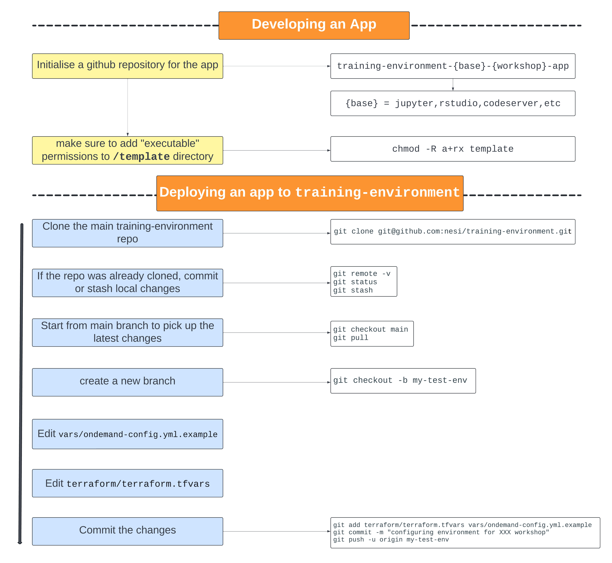

Overview
NeSI ephemeral training environments, running on Flexi HPC, deployed using Terraform and Ansible and using Open OnDemand as the user interface.
Architecture
The training environment consists of multiple VMs:
- web node VM
- running the Open OnDemand web node software
- LDAP client
- services node VM
- LDAP server
- Keycloak
- NFS server sharing training user home directories
- kubernetes cluster
- the users' Open OnDemand apps run here (JupyterLab, RStudio, etc.)
- each node in the cluster is an LDAP client
Apps
Open OnDemand interactive applications, such as JupyterLab and RStudio, are used for the training courses. Open OnDemand app development is described in detail in their documentation.
In particular, the training environment uses a kubernetes cluster for running the apps, so the apps are developed similarly to the kubernetes examples on the Open OnDemand website:
- Add a Jupyter App on a Kubernetes Cluster
- Add a Jupyter App on a Kubernetes Cluster that behaves like HPC compute
Key points about apps on our training environment:
- Apps are created as docker images
- Apps are set up as LDAP clients so training and trainer users are identified correctly within the container
- the nslcd socket from the kubernetes worker node is bound into the container at the correct location
- the /etc/nsswitch.conf file from the kubernetes worked node is bound into the container
- LDAP client packages are installed inside the container (nslcd, etc)
- All home directories are bound into the container (so trainer users can access training users' homes from within the apps if needed)
More details about apps can be found in the tutorials.
User accounts
Within the training environment we create two different types of user accounts, training users and trainer users, with randomly generated passwords.
- training accounts
- isolated accounts that can only access their own home directory
- trainer accounts
- have read-only access to training user home directories, to monitor progress and assist
- can use the browser based terminal from the OnDemand web interface
- can view running pods on the kubernetes cluster
Overall workflow
